Visual Demo / 16 October 2026
The complete interactive mockup, refreshed with Space Grotesk, Space Mono, Silkscreen, the final color palette, and the supplied Soft Joint logo and custom wordmark.
Workflow checks · Brand and responsive checks · Implementation notes
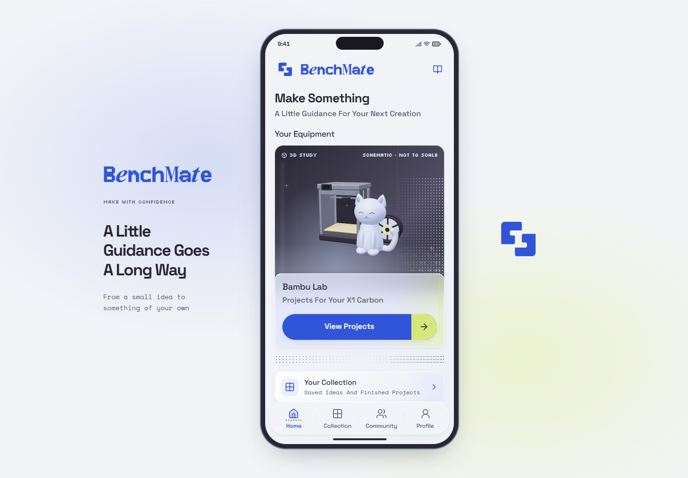
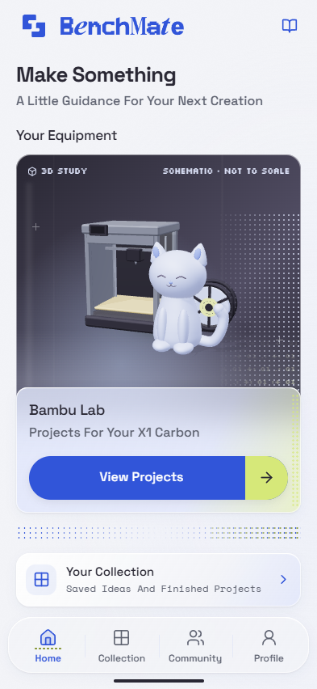
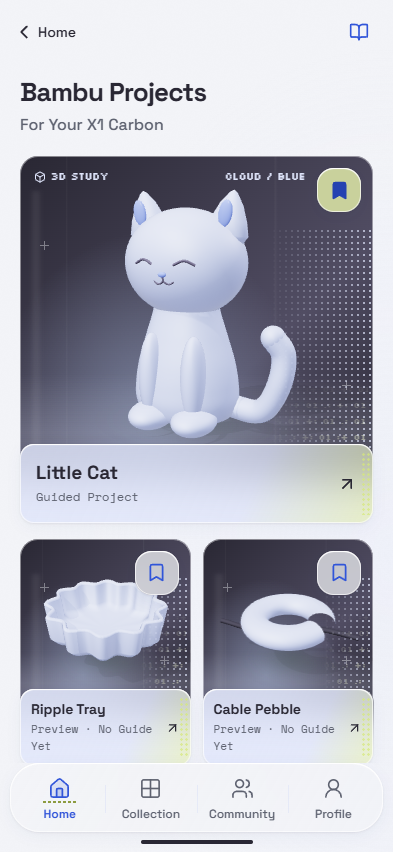
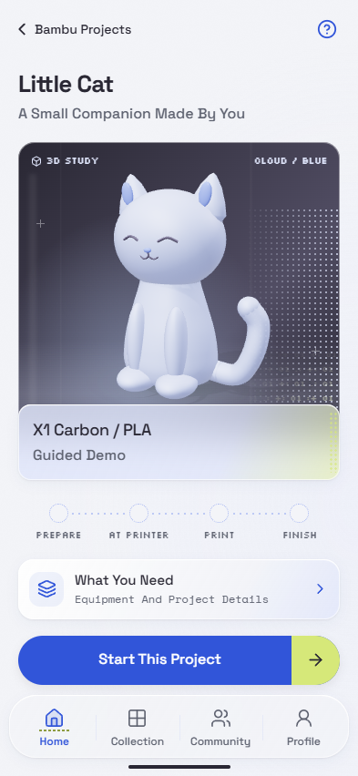
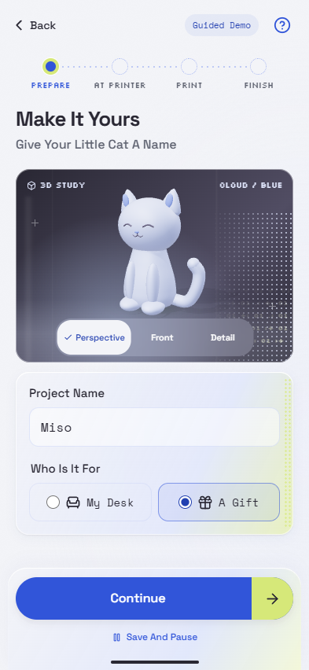
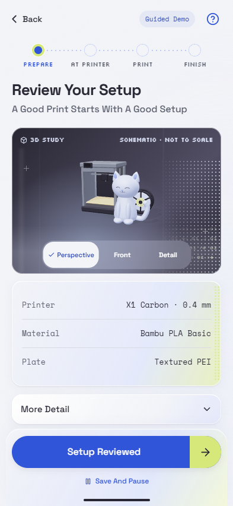
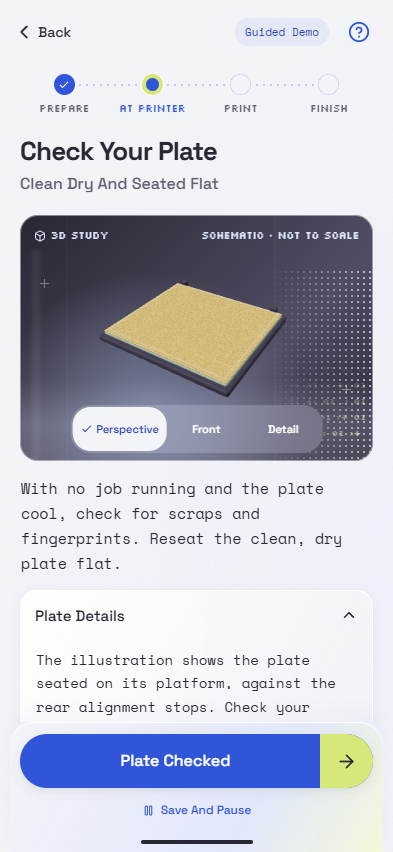
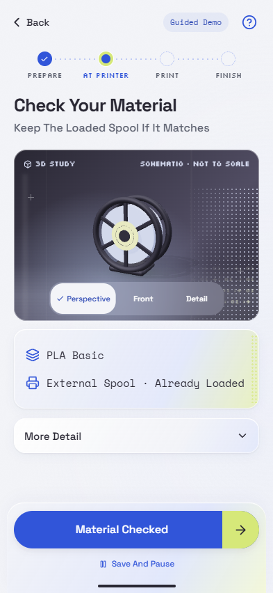
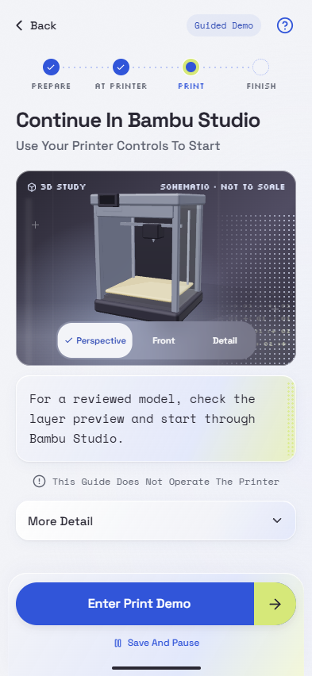
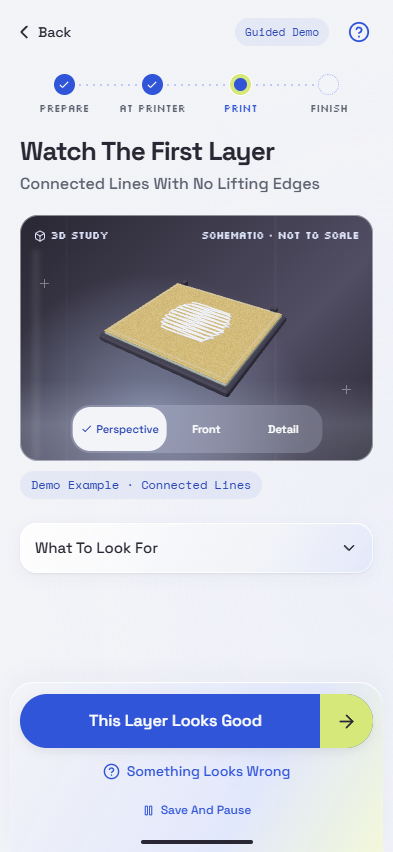
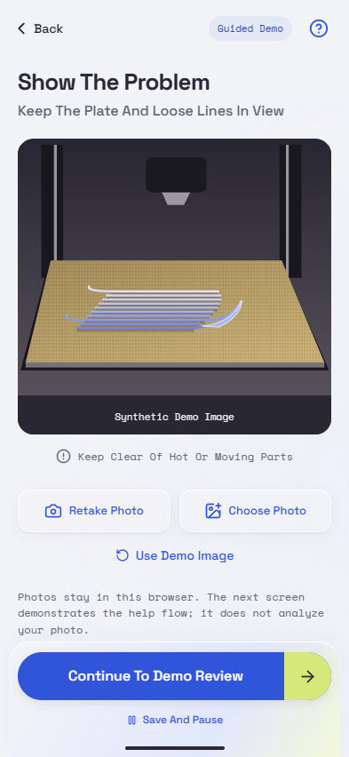
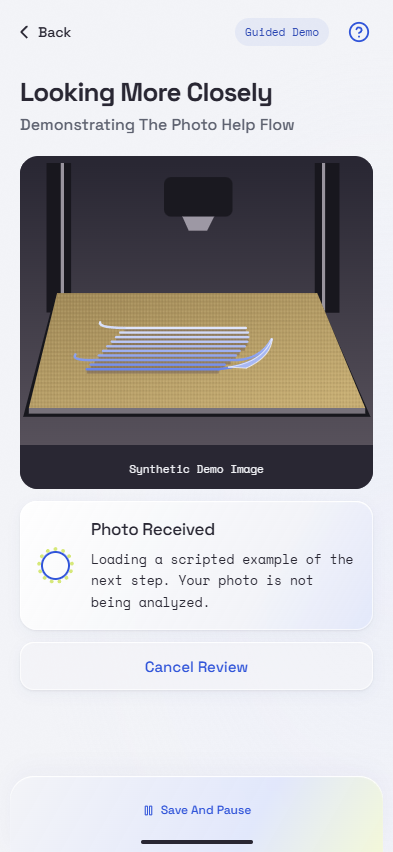
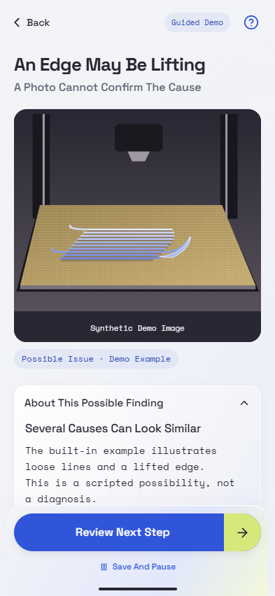
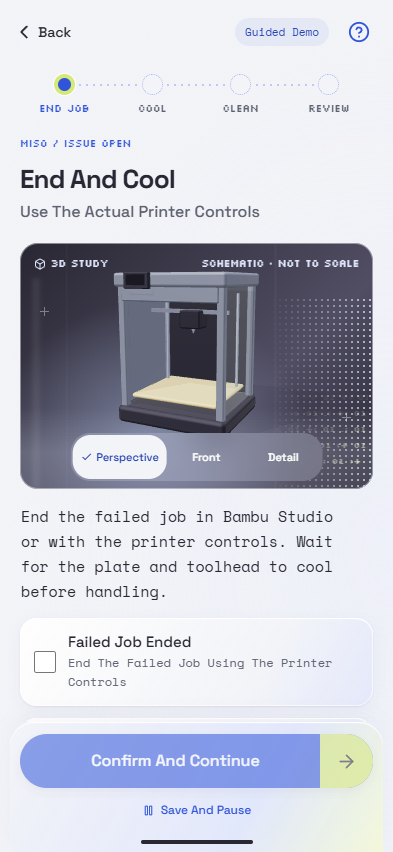
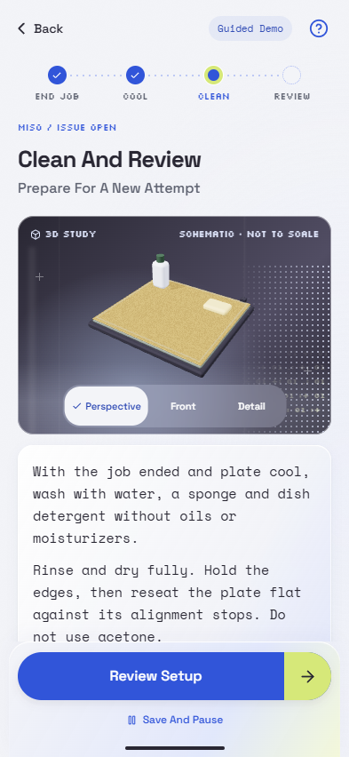
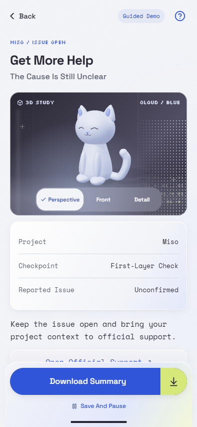
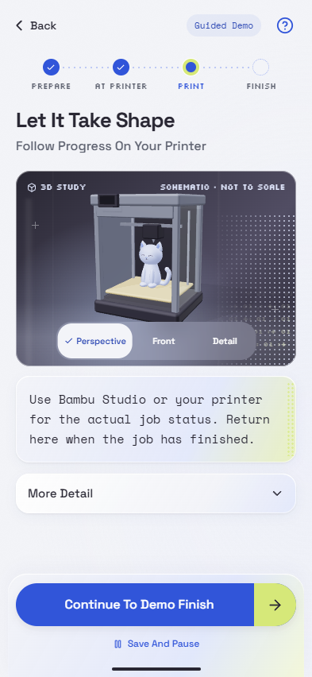
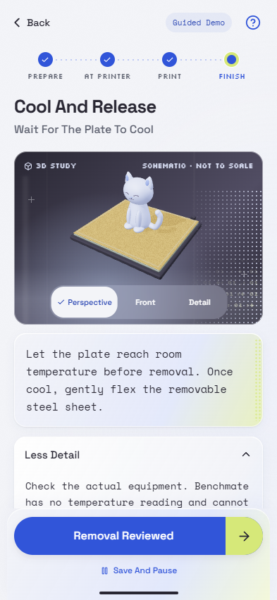
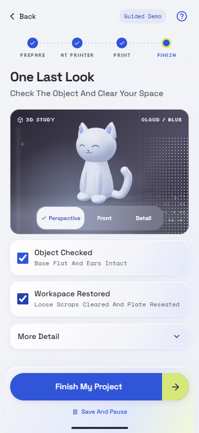
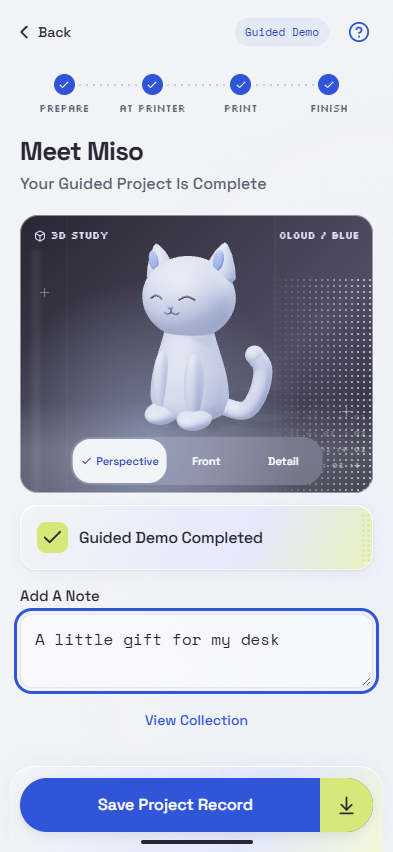
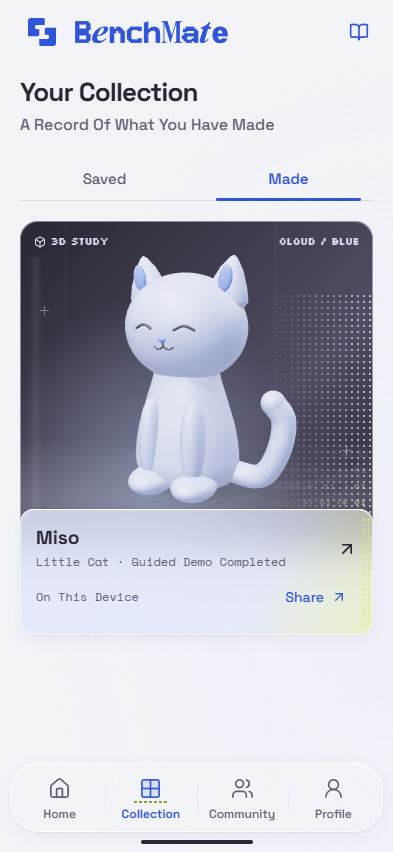
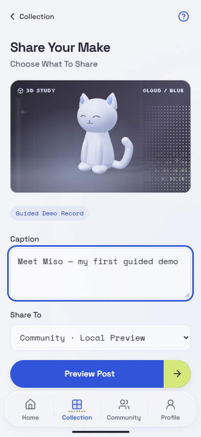
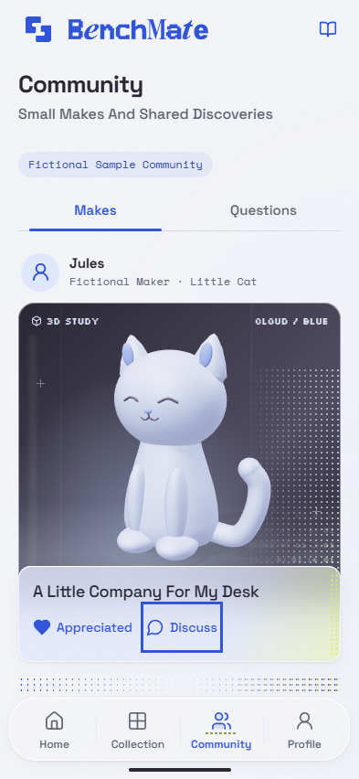
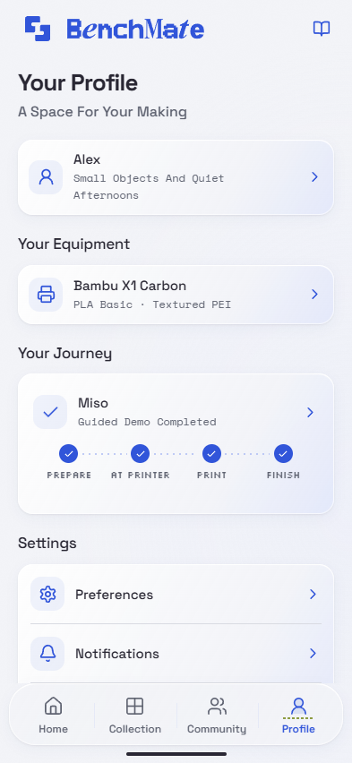
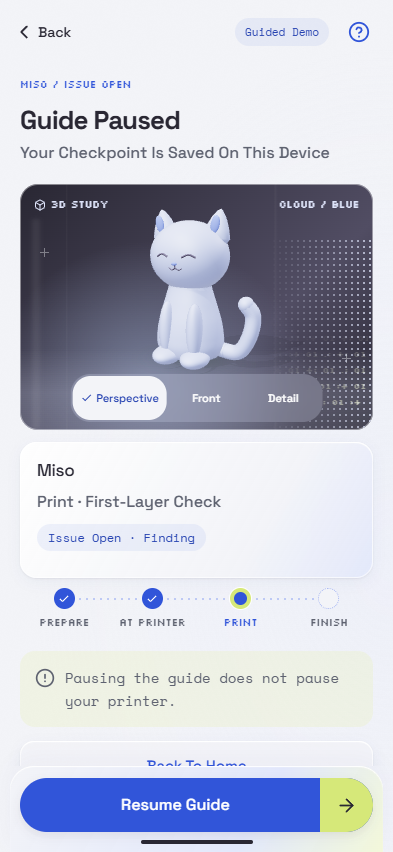
showcase-home-320 · showcase-home-393 · showcase-home-430 · showcase-home-1440 · guidance-320 · help-320 · 22-post-preview-393 · profile-long-320 · fallback-393